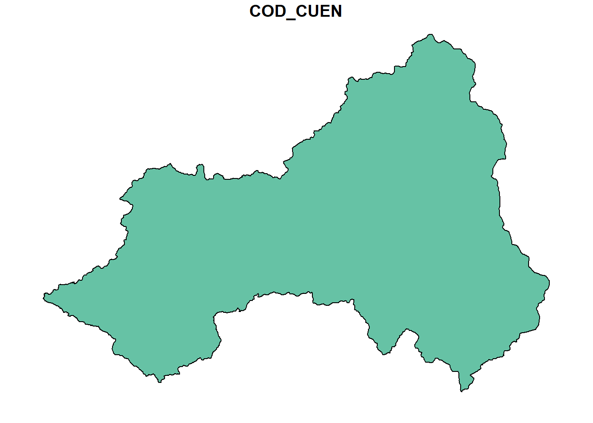
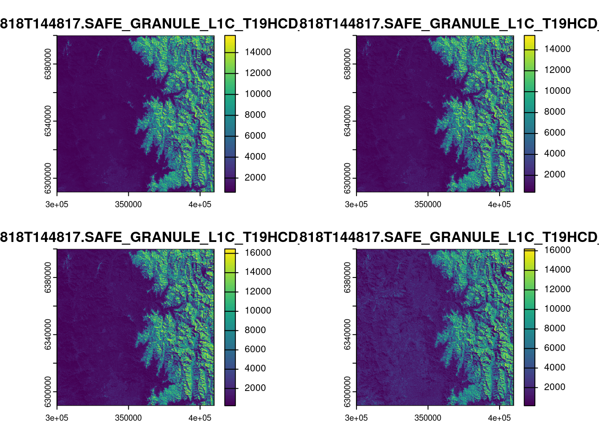
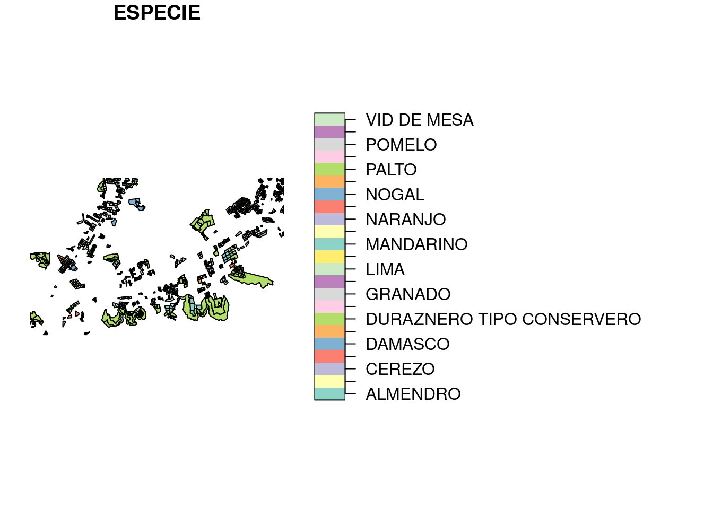
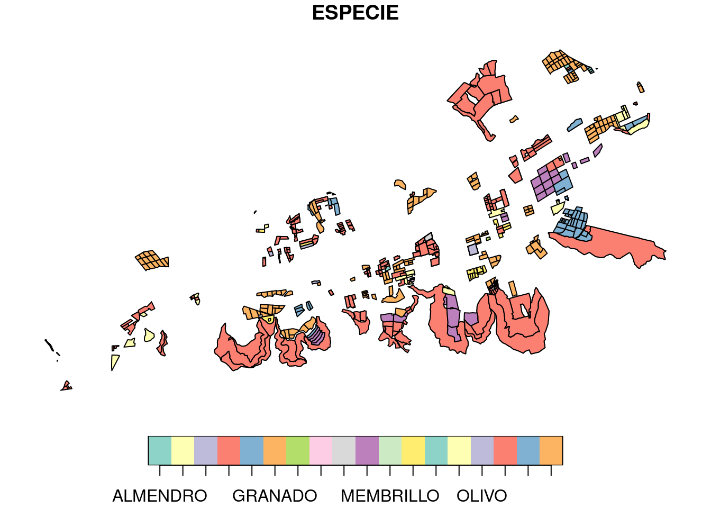
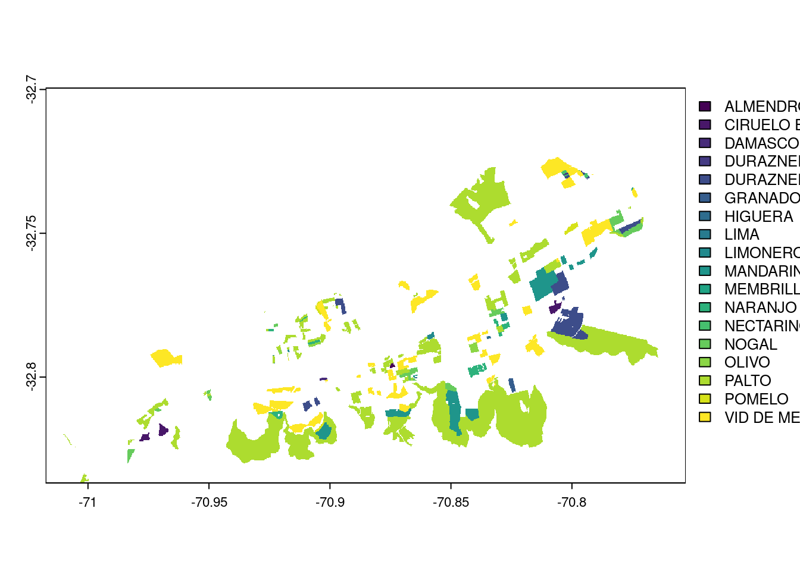
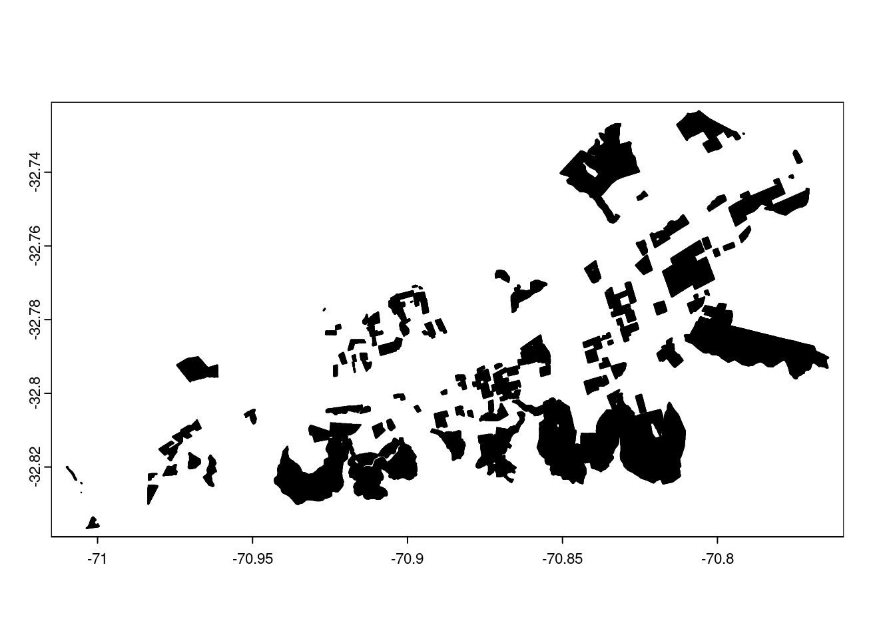

Registered S3 method overwritten by 'geojsonsf':
method from
print.geojson geojson
Welcome to sen2r. To use the package from a GUI, launch
> sen2r()
Documentation: https://sen2r.ranghetti.info
IMPORTANT: since November 2023, SAFE archives can no longer
be downloaded from the ESA Hub, so Google Cloud is the new default server.
To be able to search and download inputs:
- install Google Cloud SDK (https://cloud.google.com/sdk/docs/install);
- configure sen2r to use Google Cloud SDK launching the function:
> check_gcloud()
library(sf)
Linking to GEOS 3.10.2, GDAL 3.4.1, PROJ 8.2.1; sf_use_s2() is TRUE
library(dplyr)
Attaching package: 'dplyr'
The following objects are masked from 'package:stats':
filter, lag
The following objects are masked from 'package:base':
intersect, setdiff, setequal, union
── Conflicts ────────────────────────────────────────── tidyverse_conflicts() ──
✖ dplyr::filter() masks stats::filter()
✖ dplyr::lag() masks stats::lag()
ℹ Use the conflicted package (<http://conflicted.r-lib.org/>) to force all conflicts to become errors
library(ggplot2)library(terra)
terra 1.8.54
Attaching package: 'terra'
The following object is masked from 'package:tidyr':
extract
library(RColorBrewer)library(randomForest)
randomForest 4.7-1.2
Type rfNews() to see new features/changes/bug fixes.
Attaching package: 'randomForest'
The following object is masked from 'package:ggplot2':
margin
The following object is masked from 'package:dplyr':
combine
library(caret)
Loading required package: lattice
Attaching package: 'caret'
The following object is masked from 'package:purrr':
lift
1. Area y periodo de estudio
Se define el area de estudio a traves de un shapefile. Se define el año para los datos de entrenamiento y la ventana de tiempo para las imagenes satelitales.
# cuenca de Aconcagua# area_estudio_sf <- st_read("../01entrada/cuencaAconcagua.shp") # cuenca de Aconcagua# subsubcuenca de Aconcagua 05420area_estudio_sf <-st_read("../01entrada/subsubcuencaAconcagua05420.shp") |>select("COD_SSUBC")|>st_transform(area_estudio_sf, crs =4326)
Reading layer `subsubcuencaAconcagua05420' from data source
`/home/joaquin/Documents/GitHub/clasificacionAgroecosistema/01entrada/subsubcuencaAconcagua05420.shp'
using driver `ESRI Shapefile'
Simple feature collection with 1 feature and 12 fields
Geometry type: POLYGON
Dimension: XY
Bounding box: xmin: -71.01752 ymin: -32.83681 xmax: -70.75299 ymax: -32.69954
Geodetic CRS: WGS 84
plot(area_estudio_sf)

crs(area_estudio_sf)
[1] "GEOGCRS[\"WGS 84\",\n ENSEMBLE[\"World Geodetic System 1984 ensemble\",\n MEMBER[\"World Geodetic System 1984 (Transit)\"],\n MEMBER[\"World Geodetic System 1984 (G730)\"],\n MEMBER[\"World Geodetic System 1984 (G873)\"],\n MEMBER[\"World Geodetic System 1984 (G1150)\"],\n MEMBER[\"World Geodetic System 1984 (G1674)\"],\n MEMBER[\"World Geodetic System 1984 (G1762)\"],\n MEMBER[\"World Geodetic System 1984 (G2139)\"],\n ELLIPSOID[\"WGS 84\",6378137,298.257223563,\n LENGTHUNIT[\"metre\",1]],\n ENSEMBLEACCURACY[2.0]],\n PRIMEM[\"Greenwich\",0,\n ANGLEUNIT[\"degree\",0.0174532925199433]],\n CS[ellipsoidal,2],\n AXIS[\"geodetic latitude (Lat)\",north,\n ORDER[1],\n ANGLEUNIT[\"degree\",0.0174532925199433]],\n AXIS[\"geodetic longitude (Lon)\",east,\n ORDER[2],\n ANGLEUNIT[\"degree\",0.0174532925199433]],\n USAGE[\n SCOPE[\"Horizontal component of 3D system.\"],\n AREA[\"World.\"],\n BBOX[-90,-180,90,180]],\n ID[\"EPSG\",4326]]"
ae_vec <-vect(area_estudio_sf)# año de entrenamientoanho_train <-"2014"# anho_train <- "2017"# anho_train <- "2020"# rango de fechas de imagenesfecha_inicio <-"2024-01-01"fecha_fin <-"2024-03-31"
2. Parámetros de imagenes satelitales
Definicion de bandas y nubosidad a utilizar para la clasificacion supervisada.
nubosidad_max <-100# Porcentaje maximo de nubosidad permitido# Seleccionar las bandas a utilizar para la clasificación# B2: Azul, B3: Verde, B4: Rojo, B8: NIRbandas_clasi <-c("B02", "B03", "B04", "B08")#, "B11", "B12")#tiles_19_H_CD_S2A_MSIL1C_20150808T144816_N0204_R096_T19HCD_20150808T144817.SAFE_GRANULE_L1C_T19HCD_A000665_20150808T144817_IMG_DATA_T19HCD_20150808T144816_B04imagenes <-list.files("../03salida/", pattern ="\\.jp2", full.names =TRUE)# leer las imagenes en un raster de terracapas <-rast(imagenes)plot(capas)

crs(capas)
[1] "PROJCRS[\"WGS 84 / UTM zone 19S\",\n BASEGEOGCRS[\"WGS 84\",\n ENSEMBLE[\"World Geodetic System 1984 ensemble\",\n MEMBER[\"World Geodetic System 1984 (Transit)\"],\n MEMBER[\"World Geodetic System 1984 (G730)\"],\n MEMBER[\"World Geodetic System 1984 (G873)\"],\n MEMBER[\"World Geodetic System 1984 (G1150)\"],\n MEMBER[\"World Geodetic System 1984 (G1674)\"],\n MEMBER[\"World Geodetic System 1984 (G1762)\"],\n MEMBER[\"World Geodetic System 1984 (G2139)\"],\n ELLIPSOID[\"WGS 84\",6378137,298.257223563,\n LENGTHUNIT[\"metre\",1]],\n ENSEMBLEACCURACY[2.0]],\n PRIMEM[\"Greenwich\",0,\n ANGLEUNIT[\"degree\",0.0174532925199433]],\n ID[\"EPSG\",4326]],\n CONVERSION[\"UTM zone 19S\",\n METHOD[\"Transverse Mercator\",\n ID[\"EPSG\",9807]],\n PARAMETER[\"Latitude of natural origin\",0,\n ANGLEUNIT[\"degree\",0.0174532925199433],\n ID[\"EPSG\",8801]],\n PARAMETER[\"Longitude of natural origin\",-69,\n ANGLEUNIT[\"degree\",0.0174532925199433],\n ID[\"EPSG\",8802]],\n PARAMETER[\"Scale factor at natural origin\",0.9996,\n SCALEUNIT[\"unity\",1],\n ID[\"EPSG\",8805]],\n PARAMETER[\"False easting\",500000,\n LENGTHUNIT[\"metre\",1],\n ID[\"EPSG\",8806]],\n PARAMETER[\"False northing\",10000000,\n LENGTHUNIT[\"metre\",1],\n ID[\"EPSG\",8807]]],\n CS[Cartesian,2],\n AXIS[\"(E)\",east,\n ORDER[1],\n LENGTHUNIT[\"metre\",1]],\n AXIS[\"(N)\",north,\n ORDER[2],\n LENGTHUNIT[\"metre\",1]],\n USAGE[\n SCOPE[\"Engineering survey, topographic mapping.\"],\n AREA[\"Between 72°W and 66°W, southern hemisphere between 80°S and equator, onshore and offshore. Argentina. Bolivia. Brazil. Chile. Colombia. Peru.\"],\n BBOX[-80,-72,0,-66]],\n ID[\"EPSG\",32719]]"
# reproyectar y cortar al area de estudiocapas_geo <-project(capas, crs(area_estudio_sf))
although coordinates are longitude/latitude, st_intersection assumes that they
are planar
Warning: attribute variables are assumed to be spatially constant throughout
all geometries
plot(train_crop)

plot(train_inter)

# rasterizar poligonos de entrenamiento para que cada pixel contenga la informaciontrain_rast <-terra::rasterize(train_inter, capas_crop, field="ESPECIE")train_pol <-as.polygons(train_rast, dissolve=FALSE)plot(train_rast)

plot(train_pol)

# cruce de valores de entrenamiento y bandastrain_vals <- terra::extract(capas_mask, train_pol, df =TRUE)head(train_vals)
train_df <-cbind(train_vals, class = train_pol$ESPECIE)head(train_df)
ID B02 B03 B04 B08 class
1 1 1251.922 1163.0623 1327.889 1729.421 VID DE MESA
2 2 1262.660 1180.2139 1303.718 1787.637 VID DE MESA
3 3 1237.118 1145.6636 1328.207 1757.663 VID DE MESA
4 4 1123.832 994.9487 1188.205 1756.940 VID DE MESA
5 5 1064.150 913.4006 1108.275 1814.223 VID DE MESA
6 6 1253.882 1180.7151 1342.182 1793.408 VID DE MESA
B02 B03 B04 B08 class
1 1251.922 1163.0623 1327.889 1729.421 VID DE MESA
2 1262.660 1180.2139 1303.718 1787.637 VID DE MESA
3 1237.118 1145.6636 1328.207 1757.663 VID DE MESA
4 1123.832 994.9487 1188.205 1756.940 VID DE MESA
5 1064.150 913.4006 1108.275 1814.223 VID DE MESA
6 1253.882 1180.7151 1342.182 1793.408 VID DE MESA
write_csv(train_df, file ="../03salida/train_df.csv")train_df2 <- train_df[sample(1:nrow(train_df), size =nrow(train_df)*.01, replace =FALSE),]write_csv(train_df2, file ="../03salida/train_df2.csv")# Validación cruzada y ajuste de hiperparámetrosctrl <-trainControl(method ="cv", number =5)tune_grid <-expand.grid(.mtry =c(2, 3, 4))set.seed(123)rf_model <-train( class ~ .,data = train_df2,method ="rf",tuneGrid = tune_grid,trControl = ctrl,ntree =500)
Warning: model fit failed for Fold4: mtry=2 Error in randomForest.default(x, y, mtry = param$mtry, ...) :
Can't have empty classes in y.
Warning: model fit failed for Fold4: mtry=3 Error in randomForest.default(x, y, mtry = param$mtry, ...) :
Can't have empty classes in y.
Warning: model fit failed for Fold4: mtry=4 Error in randomForest.default(x, y, mtry = param$mtry, ...) :
Can't have empty classes in y.
Warning in nominalTrainWorkflow(x = x, y = y, wts = weights, info = trainInfo,
: There were missing values in resampled performance measures.
# Guardar modelosaveRDS(rf_model, file ="../03salida/modelo_rf.rds")# rf_model <- readRDS("modelo_rf.rds")# Prediccion en el area de estudioclasificacion0 <- terra::predict(capas_mask, #mask=TRUE, rf_model$finalModel, type ="response")#, cores = events)plot(clasificacion0, main ="Clasificación Random Forest supervisada")